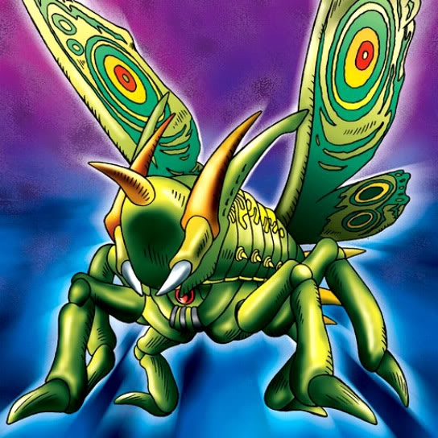

Great Moth

Description: "While this card is face-up in the defense position, all enemy monsters are reduced by 100 points each turn."
STATS
ATK: 2600
DEF: 2500
DECK COST
Deck Cost per Card: 56
EFFECT NOT IMPLEMENTED